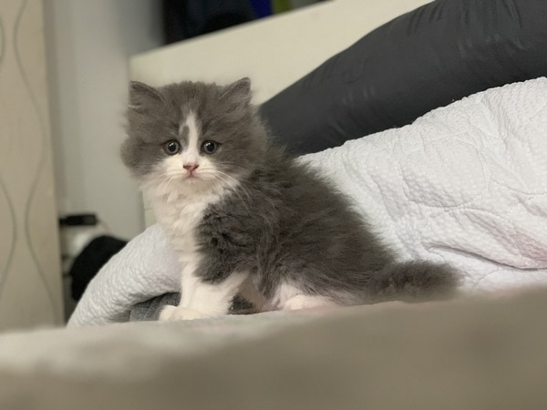
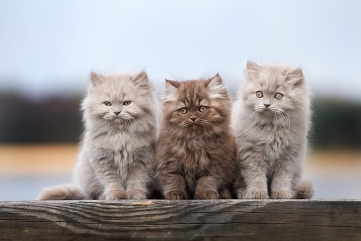
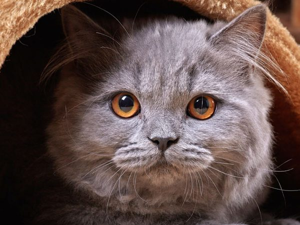
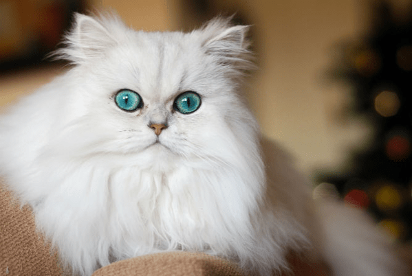
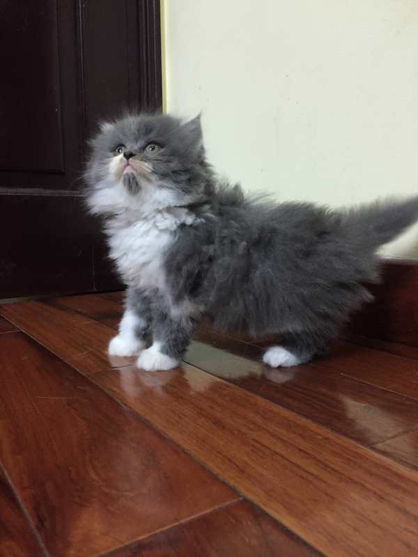
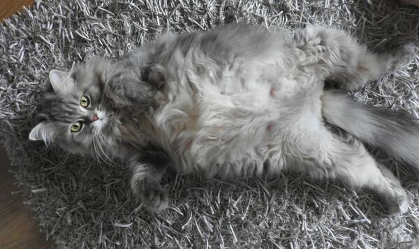

Mèo anh lông dài
Ngày nay, khi xã hội ngày càng phát triển, những gia đình có điều kiện thường mong muốn nuôi một chú mèo xinh đẹp làm thú cưng trong nhà. Trong vô vàn những giống mèo độc đáo trên thế giới, mèo Anh lông dài vẫn được rất nhiều người lựa chọn. Với vẻ ngoài hiền dịu dễ thương, tính cách gần gũi, thân thiện, mèo Anh lông dài được nhân giống và nhập khẩu ở rất nhiều nơi. Tùy thuộc vào nguồn gốc, xuất xứ, đặc điểm ngoại hình, mức độ thuần chủng,… mà giá bán mèo Anh lông dài lại khác nhau. Nếu bạn đang muốn mua một chú mèo Anh lông dài nhưng chưa hiểu rõ những thông tin liên quan tới giống mèo này thì đừng bỏ qua bài chia sẻ dưới đây nhé.
1. Nguồn gốc của mèo Anh lông dài
Mèo Anh lông dài còn có tên gọi khác là Ald hay British Longhair. Chỉ cần nghe cái tên là ai cũng biết nơi sinh ra của giống mèo này rồi đúng không? Mèo Anh lông dài có nguồn gốc từ nước đất nước Anh xa xôi, xuất hiện vào khoảng giữa thế kỷ 20, khá muộn so với các giống mèo khác trên thế giới.
Lý do của sự ra đời này là vì nguy cơ tuyệt chủng của mèo Anh lông ngắn ngày càng cao, đặc biệt là sau chiến tranh thế giới thứ 2. Vì thế để đảm bảo được bộ gen quý giá của mèo Anh lông ngắn, người ta đã đem lại tạo mèo Anh lông ngắn và mèo Ba Tư lại với nhau. Từ đây mèo Anh lông dài ra đời.
2. Đặc điểm ngoại hình
Mèo Anh lông dài có thân hình chắc khỏe và bộ lông dài bóng mượt. Đầu chúng tròn, hai tai ngắn lúc nào cũng vểnh lên và đôi mắt lúc nào cũng sáng lên vô cùng tinh anh, nhanh nhạy. Mèo Anh lông dài có lông đuôi khá dày và dài, bộ ngực sâu chắc nịch, cảm tưởng rất vạm vỡ, khỏe khoắn. Vì được lai tạo giữa mèo lông ngắn và mèo Ba Tư thuần chủng nên mèo Anh lông dài sở hữu nhiều màu lông khác nhau như trắng, đen, nâu vàng, nâu socola, đỏ, xanh… kèm với đó là một vài nét chấm phá màu sắc khác. Nhờ vào ngoại hình siêu dễ thương này mà mèo Anh lông dài chiếm trọn cảm tình từ những người yêu mèo.
Nhờ có bộ lông dài lý tưởng nên mèo Anh lông dài sống rất tốt ở khu vực có khí hậu lạnh. Khi đem về Việt Nam, chúng phải mất một thời gian để thích nghi. Cách tốt nhất chăm sóc cho mèo Anh lông dài vào mùa hè đó là để chúng sống và nghỉ ngơi ở những nơi thoáng mát trong nhà. Ngoài ra, việc chăm sóc lông cho mèo Anh lông dài cũng cần được chú trọng. Bởi lông chính là vũ khí đắt giá nhất giúp đánh giá nhan sắc cũng như sức khỏe của “boss”. So với những giống mèo có bộ lông ngắn thì việc chăm sóc lông cho mèo Ald sẽ phức tạp và vất vả hơn một chút. Lông dài rất hay bị bết dính, vón cục và nếu không thường xuyên vệ sinh sẽ dễ bị nhiễm khuẩn gây bệnh và nấm. Đặc biệt vào mùa xuân và thu, những khoảng thời gian mèo bước vào giai đoạn rụng lông, lông có thể bay khắp nhà, bám vào mọi đồ vật. Việc vệ sinh lông cho mèo Ald lại càng cần thiết hơn.
3. Tính cách của mèo Anh lông dài
Mèo Anh lông dài có tính cách ngoan hiền, dễ gần gũi với các vật nuôi khác trong nhà. Khi còn nhỏ chúng sẽ khá hiếu động, tinh nghịch, thích nô đùa với trẻ con và các món đồ chơi như cần câu cá, đèn laser. Tuy nhiên càng lớn chúng lại trở nên lười nhác một chút, thích nằm ngủ hơn là chơi đùa. Những chú mèo Anh lông dài sống vô cùng tình cảm, thích được chủ vuốt ve, ôm vào lòng và cho ngủ cùng. Nếu bạn để chúng đi lại tự do, chắc chắn sáng tỉnh giấc sẽ thấy em mèo đang nằm ngủ say giấc cạnh mình đó.
4. Giá mèo Anh lông dài là bao nhiêu?
Giá mèo Anh lông dài cũng chịu ảnh hưởng của ngoại hình. Những em mèo Anh lông dài có màu lông đặc biệt như bicolor, tam thể, tabby, nâu socola, himalaya, lilac, silver sẽ có giá cao hơn những con mang màu sắc cơ bản. Đặc biệt, giá bán mèo Anh lông dài sở hữu bộ lông màu golden là đắt nhất. Bên cạnh đó, những em mèo có ngoại hình mũm mĩm, xinh xắn, nhanh nhẹn cũng có giá bán nhỉnh hơn đôi chút.

Mua mèo Anh lông dài giờ đây không còn khó khăn nữa khi trên thị trường hiện nay có vô số các trang trại nhân giống và nhập khẩu giống mèo này. Giá mèo Anh lông dài có nhiều nấc khác nhau, phụ thuộc vào mức độ thuần chủng, đặc điểm ngoại hình, tính cách và nơi nhập. Nhưng đa phần đều phù hợp với điều kiện kinh tế của những gia đình muốn sở hữu một em mèo cảnh. Mức giá bán mèo Anh lông dài dao động từ 500.000 VNĐ – 30 triệu VNĐ.
Giá mèo Anh lông dài thuần chủng nhập khẩu
Mèo Anh lông dài thuần chủng có mức giá từ 4 triệu – 30 triệu đồng. Tùy thuộc vào kích cỡ, màu sắc và các đặc điểm dị biệt như chân ngắn, tai cụp mà có mức giá khác nhau. Đa phần những chú mèo Anh lông dài thuần chủng đều được nhập khẩu từ các nước trong khu vực châu Á như Trung Quốc, Thái Lan và lãnh thổ châu Âu, Mỹ. Những nơi bán mèo Anh lông dài nhập khẩu sẽ xuất trình được giấy tờ chứng nhận thuần chủng, gia phả rõ ràng, được tiêm phòng đầy đủ.
